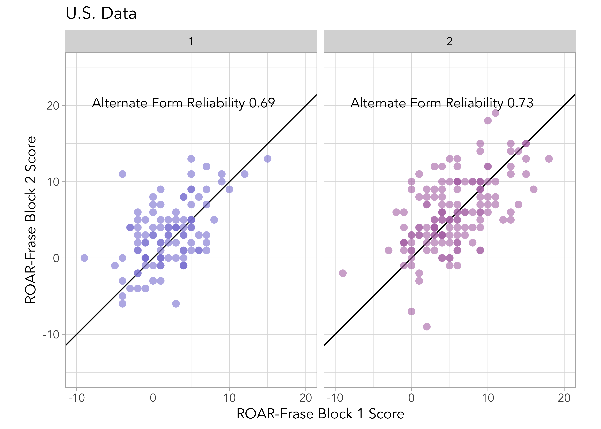

21 Reliability of ROAR-Frase
ROAR-Frase is a timed Spanish reading measure where the student reads sentences and decides if the statement is true or false. The score is computed as the number of correct trials minus the number of incorrect trials in the alloted period time window. Each participant completed 2 90-second blocks which randomly sampled from a large item bank. We had two administrations, one in 3 different regions in Colombia and one in a region of California where a majority of the students speak Spanish. Colombian students were primarily monolingual Spanish speakers and students in California were bilingual, but many entered school with Spanish as their primary language.
21.1 Criteria for flagging unreliable scores
ROAR-Frase is designed to be totally automated where the student can complete the assessment independent of any assistance from an educator or adult. Instructions are delivered through headphones with engaging an story-line. Additionally, students complete practice trials with feedback to ensure the task instructions are clear. Sentences are presented onscreen and reading is done silently. Students respond with their keyboards. Items are designed in a way that does not require background information to discern if a sentence is true or false.
A potential concern with automated assessments is that, in the absence of a teacher to administer items individually, monitor responses, and score them, some students may disengage from the task, leading to data that does not accurately reflect their actual abilities. ROAR-Frase, having items that are unambiguous and clear, can detect students who were not engaged during the assessment. Our approach to identifying and highlighting disengaged participants with scores that are thought to be unreliable can be seen below. Figure 21.1 shows a plot of median response time (RT) for each participant against the proportion correct on the assessment, collapsed across both 90-second blocks. It is clear that there is a bimodal distrubition that indicates a group of paritipants who were performing at chance and responding very quickly. Participants with a median response time <1,000ms and proportion correct <0.65 are flagged as unreiliable scores in the ROAR score report and removed from the following analyses as it is believed that these scores do no represent a participant’s true ability.
21.2 Alternate form reliability - Colombia
Alternate form reliability for Frase is computed as the Pearson correlation adjusted with the Spearman-Brown formula between scores on the two 90-second blocks that were completed during the same testing session. Figure 21.2 shows a plot of student scores on alternate test forms combining grades and Figure 21.3 shows separate plots for each grade. Table 21.1 reports alternate form reliability for the full Colombian sample and separately by grade. Table 21.2 depicts alternate form reliability for the full Colombian sample separated by gender.
| Grade | Alternate Form Reliability | N |
|---|---|---|
| All | 0.9039315 | 4512 |
| 2 | 0.6908008 | 413 |
| 3 | 0.7360957 | 490 |
| 4 | 0.7867389 | 475 |
| 5 | 0.8000892 | 561 |
| 6 | 0.7886965 | 569 |
| 7 | 0.7663706 | 496 |
| 8 | 0.8227222 | 417 |
| 9 | 0.8198782 | 408 |
| 10 | 0.8203578 | 346 |
| 11 | 0.8363014 | 337 |
| Gender | Alternate Form Reliability | N |
|---|---|---|
| All | 0.9039315 | 4512 |
| Female | 0.9035495 | 1888 |
| Male | 0.9055784 | 1849 |
| NA | 0.9009216 | 775 |
21.3 Alternate form reliability - United States
Here we show reliability between blocks 1 and 2 for all United States data (California). As with Colombia data, alternate form reliability for Frase is computed as the Pearson correlation adjusted with the Spearman-Brown formula between scores on the two 90-second blocks that were completed during the same testing session. Figure 21.4 shows a plot of student scores on alternate test forms combining grades and Figure 21.3 shows separate plots for each grade.
Table 21.3 reports alternate form reliability for the California sample and separately by grade, Table 21.4 shows the breakdown of alternate form reliability by gender, Table 21.5 depicts alternate form reliability for the full California sample separated by English Learner Status, Table 21.6 shows alternate form reliability separated by primary language, Table 21.7 shows breakdown by special education status, and finally, Table 21.8 shows breakdown of reliability by free and reduced lunch status.

| Grade | Alternate Form Reliability | N |
|---|---|---|
| All | 0.7567431 | 256 |
| 1 | 0.6922893 | 106 |
| 2 | 0.7316300 | 150 |
| Gender | Alternate Form Reliability | N |
|---|---|---|
| All | 0.7567431 | 256 |
| Female | 0.7847464 | 118 |
| Male | 0.7271188 | 134 |
| NA | 0.9835240 | 4 |
| English Learner Status | Alternate Form Reliability | N |
|---|---|---|
| All | 0.7567431 | 256 |
| English Learner | 0.7096593 | 144 |
| English Only | 0.7932300 | 73 |
| Initial Fluent English Proficiency | 0.7421303 | 22 |
| Reclassified Fluent English Proficiency | 0.7493917 | 13 |
| NA | 0.9835240 | 4 |
| Primary Language | Alternate Form Reliability | N |
|---|---|---|
| All | 0.7567431 | 256 |
| English | 0.7817044 | 117 |
| Spanish | 0.7292383 | 125 |
| NA | 0.8662868 | 14 |
| Special Education Status | Alternate Form Reliability | N |
|---|---|---|
| All | 0.7567431 | 256 |
| Yes | 0.7913782 | 15 |
| No | 0.7498295 | 237 |
| NA | 0.9835240 | 4 |
| Free and Reduced Lunch | Alternate Form Reliability | N |
|---|---|---|
| All | 0.7567431 | 256 |
| Pays | 0.8066802 | 82 |
| Reduced | 0.8148188 | 45 |
| Free | 0.6528948 | 125 |
| NA | 0.9835240 | 4 |